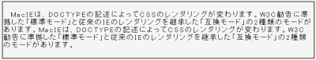

自動折り返しが行われる量の内容物（長い文章など）を持つ要素に対してletter-spacingプロパティを指定すると、表示が崩れる。
<p style="letter-spacing:0.2em;">MacIEは……あります。</p>
MacIEは、DOCTYPEの記述によってCSSのレンダリングが変わります。W3C勧告に準拠した「標準モード」と従来のIEのレンダリングを継承した「互換モード」の2種類のモードがあります。MacIEは、DOCTYPEの記述によってCSSのレンダリングが変わります。W3C勧告に準拠した「標準モード」と従来のIEのレンダリングを継承した「互換モード」の2種類のモードがあります。
文字間隔を0.2emにしています。折り返されていない場合はウィンドウ幅を狭めてください。
キャプチャ後に縮小しています。
WinIE6.0での表示（標準モード）
letter-spaceプロパティを含むスタイル指定を@mediaで括るとMacIEはその指定を認識しないので、バグの発生を回避できます。
@media screen, print {
p {
letter-spacing: 0.2em;
}
}
このバグは要素内に多バイト文字が含まれている場合に発生するもので、内容物が1バイト文字だけの場合は発生しないようです。（2002-12-02追記）
MacIE4〜5に渡って発生する模様。
【MacIE4〜5】（有名だが登録されてないので一応ここに書き込む）
自動折返しされる長さを持った要素にletter-spacingを適用すべからず。
表示が崩れます。
対処法としては、
@media screen,print {
p{letter-spacing:0.2em;}
}
と@mediaで括ってやるとMacIEは認識しない。